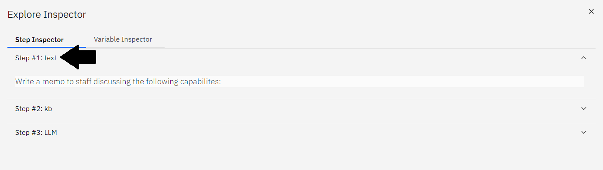

3.2 - Plantillas de ejemplo
mAIstro de NeuralSeek ofrece varios ejemplos de plantillas adaptables con una variedad de capacidades mejor adaptadas a su caso de uso.
Cargar Plantilla
La pantalla introductoria de la función mAIstro de NeuralSeek mostrará las opciones para Ejemplos de Plantillas y Plantillas de Usuario.
- Haga clic en Ejemplos de Plantillas, luego elija la opción Escribir un Memo.
Si ha salido de la pantalla introductoria, entonces haga clic en el botón Cargar en la parte inferior de la pantalla para acceder a las mismas opciones.

Nodos Poblados
Dentro del Editor Visual, el flujo de ejemplo se poblara y mostrará tres nodos. ¡Vamos a explorarlos más a fondo!

Nodo de Texto
El primer nodo del flujo de la plantilla es un nodo de Texto.
- Haga clic en la caja del nodo para mostrar el panel de propiedades. En su interior, hay un mensaje preescrito en lenguaje natural que indica
Write a memo to staff discussing the following capabilites:.
Nodo de Búsqueda en KB
El segundo nodo del flujo de plantilla es un nodo de Búsqueda en KB.
- Haga clic en la caja del nodo para mostrar el panel de propiedades.
- Usando palabras clave, ejecute una consulta directamente contra la Base de Conocimientos conectada. En este ejemplo, reemplazaremos
cognos analyticsconfiltering.

Nodo de Envío a LLM
El tercer nodo del flujo de plantilla es un nodo de Envío a LLM.

Evaluar el Flujo de mAIstro
¡Vamos a ejecutar nuestro flujo!
- Haga clic en el botón azul Evaluar en la barra inferior.
- Observe que el contenido generado aparece en el panel inferior, incluyendo un encabezado, línea de asunto, características clave con viñetas y algunos párrafos de texto.
Configurar el Nodo LLM
Haga clic en el nodo Envío a LLM para mostrar el panel de propiedades.
- Usando lenguaje natural, opcionalmente agregue una indicación adicional al Modelo de Lenguaje Grande. Por ejemplo, agregue
Limit to one paragraph. - Haga clic en el botón azul Evaluar para generar una nueva salida.
Note que esta salida es significativamente más corta y está formateada como un solo párrafo.

Depurar el Flujo
Haga clic en el ícono de bug en la esquina superior derecha para ver la ruta completa de la evaluación, más todas las variables de contexto.
- Haga clic en cada paso para expandir la evaluación completa.
- Paso #1: texto
- La indicación en lenguaje natural se muestra.
- 
- Paso #2: kb
- El contenido generado muestra la información resultante extraída de nuestra documentación fuente basada en la consulta solicitada.

- Paso #3: LLM
- Observe que el contenido generado aquí es el mismo que los contenidos resultantes al hacer clic en el botón Evaluar. Esto se debe a que es el paso final en el flujo.
- Los contenidos generados muestran un memo de un párrafo a nuestro personal basado en los contenidos generados en el Paso #2, tal como lo indica la indicación.

Descargar Contenidos Generados
Opcionalmente, también puedes descargarlos en formatos de MS Word o CSV.
- Haga clic en la opción Microsoft Word junto a Formato de Salida para descargar el contenido recién generado como un documento de MS Word.

{kind=link}
{kind=link}
{kind=link}
{kind=link}
{kind=link}
{kind=link}
{kind=link}